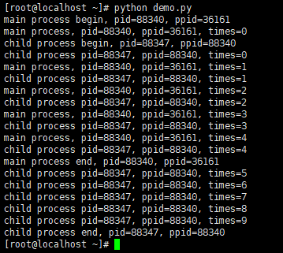
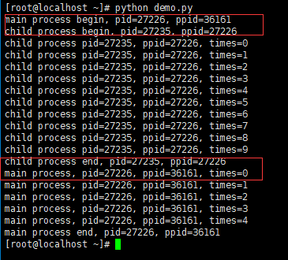
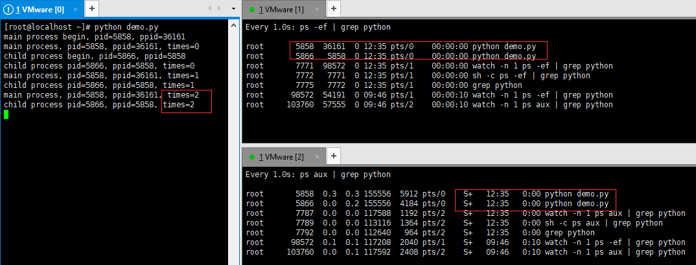
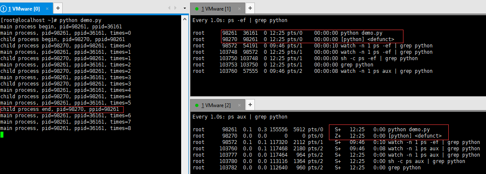

基于Python初探Linux下的僵尸进程和孤儿进程
通过对比子父进程的执行周期来详细讨论僵尸进程产生的原因和规避方法
样例代码如下所示：
1 | # -*- coding: utf-8 -*- |
业务场景及现象描述
场景一：子进程的运行周期大于父进程
子进程不调用join()方法：无僵尸进程存在
代码执行逻辑
父进程执行到p.start()后，子父进程开始同时执行；当父进程结束后，子进程继续执行；此时父进程并不退出依然存在，且进程状态依然为休眠状态(S+)；当子进程结束后，子父进程同时销毁。打印结果如下图所示：

子进程调用join()方法：无僵尸进程存在
代码执行逻辑
join()方法不带参数：首先启动父进程，当执行到p.start()后，子进程开始执行，此时父进程处于挂起状态；当子进程结束后，父进程开始继续执行后续代码。打印结果如下图所示：

join()方法带参数【eg：p.join(3)】：首先启动父进程，当执行到p.start()后，子进程开始执行，且父进程开始挂起；当子进程执行三秒后，父进程被唤醒且子父进程开始同时执行；当父进程结束后，子进程继续执行，此时父进程并不退出依然存在，且进程状态依然为休眠状态(S+)；当子进程结束后，子父进程同时销毁。打印结果如下图所示：

场景二：子进程运行周期小与父进程
子进程不调用join()方法：有僵尸进程存在
代码执行逻辑
首先启动父进程，当执行到p.start()后，子父进程开始同时执行；当子进程尚未结束时，子父进程的打印结果及其进程状态如下图所示：

当子进程结束，但父进程尚未结束时，子进程变为僵尸进程，进程的打印结果和进程状态如下图所示：

子进程调用join()方法：无僵尸进程存在
代码执行逻辑
join()方法不带参数：当父进程执行到p.start()后，子进程开始执行，且父进程挂起；当子进程尚未结束时，程序打印结果以及系统中进程状态如下图所示：

当子进程结束而父进程尚未结束时，子进程正常销毁，此时只有父进程在继续运行;程序打印结果以及系统中进程状态如下图所示：
join()方法带参数【eg：p.join(3)】：当父进程执行到p.start()后子进程开始执行，父进程开始挂起；子进程执行三秒后唤醒父进程，此时子父进程同时执行；当子进程结束后会正常退出，没有僵尸进程，与此同时父进程继续执行。


Linux进程基本概念
在Linux中，默认情况下当父进程创建完子进程后，子父进程的运行时相互独立的、异步的；即父进程无法感知到子进程何时结束。为了让父进程可以在任意时刻都能获取到子进程结束时的状态信息，提供了如下机制：
- 1) 当子进程结束后，系统在释放该子进程的所有资源(eg：占用的内存、打开的文件等)，仍会保留一定的信息，包括进程号(process id)，进程的退出状态(the termination status of the process)，运行时间(the amount of CPU time taken by the process)等。
- 2) 当父进程调用wait/waitpid方法获取子进程的退出状态信息后，系统会彻底释放掉对应子进程的所有信息。如果父进程没有调用wait/waitpid方法，且父进程一直存活，则该子进程所有用的端口号信息一直保存，从而该子进程变为僵尸进程(对系统有害)；若父进程没有调用wait/waitpid方法，且父进程已经结束，则子进程会从僵尸进程转变为孤儿进程(对系统无害)。
僵尸进程
一个进程创建了一个子进程，且当该子进程结束后，父进程没有调用wait/waitpid方法来获取子进程的退出状态信息，那么该子进程将会一直保留在系统中，并持续占有该进程的端口号等信息；进程标识符为<defunct>，进程状态位为Z，这种进程称之为僵尸进程。如下图所示：

孤儿进程
当父进程退出而子进程还在运行时，这些子进程将会变成孤儿进程。孤儿进程将会init进程统一管理。因为init进程的进程号为1，所以所有的孤儿进程的父进程号均为1；此外，因为init进程会主动收集所有子进程的退出状态信息，所有由init进程管理的子进程是不会变成僵尸进程。因此，孤儿进程是对系统无害的。
例如：在上述样例代码的基础上，将子父进程的运行周期均扩大为60(保证有足够的时间去手动kill掉父进程，方便举例验证)，当子父进程运行的同时，手动kill掉父进程，子进程的进程号变化如下图所示
kill前：

kill后：

Python - multiprocessing的join()方法
源码中该方法的描述如下所示：

不难看出，该方法主要做两件事：
第一：通知父进程调用wait方法来获取子进程的结束状态信息，从而清除僵尸进程
第二：将该子进程从父进程的子进程列表中移除
因此，基于Python实现多进程时，可以通过join()方法来消除子进程转化为僵尸进程的潜在风险。
需要注意的是：join()方法的官方解释是“等待直到子进程终止”。需要注意的是这里等待的主语是父进程而非子进程。join()方法有一个timeout参数，用来设置等待时长。如果不设置，这意味着等子进程结束后，父进程才开始继续执行；如果设置timeout参数，当timeout小与子进程的运行周期时，表示当子进程执行timeout时长后(单位是秒)，父进程被唤醒然后子父进程同时执行；当timeout大于子进程的运行周期时，子进程结束后父进程立即执行，而不是等到timeout时长后才开始执行。
在写代码的时候，需要注意join()方法的使用；否则有可能会导致看似的多进程并发代码，实则的多进程的串行执行。Eg：将样例代码中的MainProcess类的excutor方法改写成如下形式：

当基于for循环创建子进程时，若将p.join()卸载循环体内，则实际的执行逻辑为：主线程 => 子线程1 => 子线程2 => 子线程3 => 主线程；代码打印结果如下图所示：

若想基于该写法实现真并发，可将p.join()改写为p.join(0.001)即可；代表着新建子进程后父进程的挂起时间仅为0.001秒，因此可以近似等价于同时执行；执行效果如下图所示：

存疑
Python-multiprocessing模块默认的子进程模式为非守护进程模式(即默认p.daemon=False)，意味着父进程完成后不影响子进程的执行，当子进程结束后父进程才会结束。若将p.daemon设置为True，则当父进程结束后，立马杀死子进程。
为什么当子进程运行周期大于父进程，且子进程不调用join时，没有僵尸进程进程？可能性猜测：
- 可能性一：父进程结束后等待子进程结束；当子进程结束后，父进程退出的同时伴随着子进程做如下变化：子进程 => 僵尸进 => 孤儿进程 => 销毁
- 可能性二：父进程结束后等待子进程结束；当子进程结束后，父进程退出的同时会清除子进程
此处就有一个疑问：当子进程为非守护进程时，父进程结束后为什么不结束，而是等待直到子进程结束后父进程才退出；父进程是如何感知到子进程的运行状态？
基于上述的理论推断第一种猜测的可能性比较合理，但是在实际监控(监控频率为0.001s)中并没有看到子进程状态的变化过程；相反实际的实验现象更像是第二种假设。但是因为没有调用join，所以父进程不会主动获取子进程的退出状态信息。
真正的原因还有待研究~~~